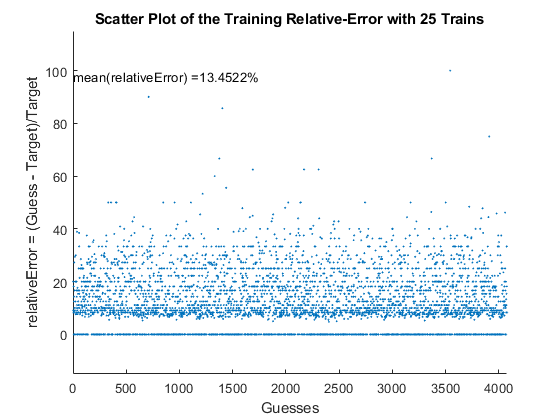

Contents
- **********************************************************************
- * Problem 3: LEARNING ************************************************
- **********************************************************************
- **********************************************************************
- **********************************************************************
**********************************************************************
- AUTHOR(S) :
- Bruno González Soria (A01169284)
- Antonio Osamu Katagiri Tanaka (A01212611) *
- FILENAME :
- HW03.m *
- DESCRIPTION :
- Computación Aplicada (Ene 19 Gpo 1)
- Final Exam *
- NOTES :
- In submitting the solution to this final exam, We Bruno González
- Soria and Antonio Osamu Katagiri Tanaka affirm our awareness of the
- standards of the Tecnológico de Monterrey Ethics Code. *
- Thanks to The Coding Train: https://www.youtube.com/watch?v=XJ7HLz9
- VYz0&list=PLRqwX-V7Uu6Y7MdSCaIfsxc561QI0U0Tb&index=1 *
- START DATE :
- 02 May 2019 **********************************************************************
close all, clear all, clc, format compact rng(31416)
* Problem 3: LEARNING ************************************************
The age of a specific species of shellfish is related to several physical characteristics. The sheet data of the Excel file shellfish.xlsx contains data of 4077 individuals, and their ages
% shellfish.xlsx data description: % ---------------+------------+-------+---------------------------- % Name | Data Type | Meas. | Description % ---------------+------------+-------+---------------------------- % Sex | nominal | | M, F, and I (infant) % Length | continuous | mm | Longest shell measurement % Diameter | continuous | mm | perpendicular to length % Height | continuous | mm | with meat in shell % Whole weight | continuous | grams | whole shellfish % Shucked weight | continuous | grams | weight of meat % Viscera weight | continuous | grams | gut weight (after bleeding) % Shell weight | continuous | grams | after being dried % Age | integer | | years % ---------------+------------+-------+----------------------------
**********************************************************************
a) Train a neural network using the information of these 4077. 1) This data must be divided into training, testing, and possibly validation examples. Explain your decision when choosing these data sets.
The neural netowrk (AKA brain) is trained through a superviced
learning algorithm. Therefore the 4077 entries in shellfish.xlsx
are used for both purposes, training and testing. The reason
behind this desition is to consider the most amount of entries as
possible, therfore to train the brain with all the known data.2) Explain any pre-processing done to the data.
Two steps were performed to pre-process the data: 1) convert the
imported cell-matrix data types into ordinary matrices, and
2) convert the categorical variables into integer values. These
convertions are done to ease the algorithm computation.% load shellfish data ssds = spreadsheetDatastore('./shellfish.xlsx'); % store the 1st sheet - DATA ********************************************** ssds.Sheets = 1; data = read(ssds); data_arr = zeros(height(data),width(data)); % convert cell matrix to ordinary matrix for k=1:width(data) %data_varNames = data.Properties.VariableNames(k); %debuggin purposes %data_varNames = cell2mat(data_varNames); %debuggin purposes table_col = table2array(data(1:height(data),k)); if isa(table_col,'cell') % convert categorical values to integers: % F = 70, M = 77, I = 73 data_arr(1:height(data),k) = cell2mat(table_col); else % keep the values as they are data_arr(1:height(data),k) = table_col; end end % data_arr shall be used for the neural training % let's train the brain/perceptron with the known training data in % data_arr - Through a SUPERVISED LEARNING ALGORITHM % 1) Provide the perceptron with inputs for which there is a known % answer % 2) Ask the perceptron to guess an answer % 3) Compute the error (Did it get the answer right or wrong?) % 4) Adjust all the weights according to the error % 5) Return to step 1) and repeat! % initialize the weights randomly nInputs = width(data)-1; % number of inputs weights = zeros(1,nInputs); for k=1:nInputs weights(1,k) = randi([-10 10]); % random numbers between -10 and 10 end % from previous trainings, the weights are estimated to be the following: weights = [-7.5340 5.6109 5.3689 6.3149 2.7319 -10.4802 7.2560 0.1472]; % let's create some variables to see how well brain is being trained guess = zeros(1,length(data_arr)); % to store what the perceptron guesses known = zeros(1,length(data_arr)); % to store the correct answers n = 25; % let's train the brain n-times for i=1:n for k=1:length(data_arr) % let's feed our brain/perceptron some intputs inputs = data_arr(k,1:width(data)-1); % set the known target (correct answer) to compute the error target = data_arr(k,width(data)); % let's create a brain/neuron brain = perceptron(inputs,weights,target); % let's ask brain for a guess brain = brain.guess; % let's train the brain according to the previous guess brain = brain.train; % update the weights according to the training weights = brain.weights; % populate the tracking variables guess(1,k) = brain.Output; known(1,k) = brain.target; end end % Guesses are rounded to the nearest integer. Age is od type integer, as % defined in shellfish.xlsx data description guess = round(guess);
**********************************************************************
b) Using your trained neural network, determine the age of the 100 individuals in sheet predict. Write the results to as a column of an Excel worksheet.
The predicted data (ages) are stored in predictedAge
% store the 2nd sheet - PREDICT ******************************************* ssds.Sheets = 2; predict = read(ssds); predict_arr = zeros(height(predict),width(predict)); % convert cell matrix to ordinary matrix for k=1:width(predict) %predict_varNames = predict.Properties.VariableNames(k); %debuggin purposes %predict_varNames = cell2mat(predict_varNames); %debuggin purposes table_col = table2array(predict(1:height(predict),k)); if isa(table_col,'cell') % convert categorical values to integers: % F = 70, M = 77, I = 73 predict_arr(1:height(predict),k) = cell2mat(table_col); else % keep the values as they are predict_arr(1:height(predict),k) = table_col; end end % data from predict_arr shall be used to predict the Age % let's create a variable to store the predictions predictedAge = zeros(length(predict_arr),1); % let's guess predict_arr for k=1:length(predict_arr) % let's feed our brain/perceptron some intputs to get a guess. inputs = predict_arr(k,1:size(predict_arr,2)); % set the known target to 0 ... this is not used in this step target = 0; % let's create a brain brain = perceptron(inputs,weights,target); % let's ask brain for a guess brain = brain.guess; % populate the tracking variable predictedAge(k,1) = brain.Output; end % Predictions are rounded to the nearest integer. Age is od type integer, % as defined in shellfish.xlsx data description predictedAge = round(predictedAge); % Save predictions into a CSV file tbl = [predict array2table(predictedAge)]; writetable(tbl,'./cLearning.csv','WriteRowNames',true,'Delimiter',','); disp(tbl)
Sex Length Diameter Height Whole Shucked Viscera Shell predictedAge
___ ______ ________ ______ _____ _______ _______ _____ ____________
'M' 105 83 29 169 70.5 32.7 57.5 12
'I' 107 80 29 141 61.3 27.3 44 12
'M' 100 80 26 132.9 51.6 26.6 48 12
'I' 90 72 26 95.6 38.2 25.4 27.4 11
'I' 88 68 25 97.9 34.7 17.5 40 12
'M' 116 95 30 194 77 43.3 70 14
'I' 87 66 19 78.6 43.8 15 17.7 9
'M' 111 89 26 172.5 84.5 31 48 11
'F' 129 103 35 309.2 140.7 73 83 14
'I' 87 68 22 75.9 29.9 17 24 11
'I' 112 88 34 188.9 70.9 43.5 60 14
'M' 39 29 10 6.4 2 1.6 2.4 7
'I' 76 56 19 57.7 33 8.7 13.4 9
'I' 104 76 26 106.9 47.5 24.4 30.7 12
'F' 127 100 36 251.3 107.8 58.4 70 14
'I' 67 50 16 33.9 13.9 8.8 9.9 9
'F' 108 95 31 243.4 106.1 61.5 68 13
'M' 125 94 30 224.8 111.2 46.3 57.4 12
'M' 125 97 32 242.7 126.2 44.7 60.4 11
'M' 139 110 41 434.6 226.6 93.3 99.2 11
'I' 104 77 23 116.2 51.1 31.2 28.6 11
'I' 66 52 16 38 15.3 7.7 13 9
'M' 118 92 29 185.8 76 48 51 13
'M' 105 80 28 144.1 73.7 29 34.7 10
'I' 88 69 24 97.4 39.3 21.6 32 11
'F' 100 80 25 133.5 52.2 26.3 44 12
'M' 126 98 36 226 91.6 55.3 63 14
'M' 117 102 32 243.6 127.8 48.2 60 11
'M' 128 102 34 274.3 113.4 61.4 81.8 14
'F' 96 77 27 107.2 37.9 28.4 34.6 13
'F' 123 97 32 231.5 100.1 49.9 63 14
'M' 113 87 30 198 115.9 36.5 41.2 9
'I' 88 62 23 72.5 26.8 16.4 24 11
'I' 100 75 28 111.8 47.5 27 33.8 12
'M' 148 107 37 330 146.8 90.1 67 14
'I' 102 80 25 111.5 52.3 23.9 30.5 11
'I' 86 63 19 75.6 35 16 20.9 10
'I' 105 81 25 131.4 59.7 30.1 33.6 11
'F' 113 90 29 169.9 84.3 33.7 45 12
'M' 72 54 18 44.5 16.6 10.6 15 9
'I' 74 57 19 45.2 22.7 10.3 13.5 9
'I' 55 39 18 22.5 10.9 5.9 7.1 8
'I' 93 74 23 106.8 52.2 19.6 28.6 10
'F' 114 89 29 175.5 82.4 43.4 44 12
'I' 130 104 30 247.6 109.9 59.2 66.1 14
'M' 152 115 38 365.8 140.7 77.2 112 17
'M' 114 91 31 166.4 71.7 34.8 55.4 13
'F' 130 107 35 257.9 121.9 55.3 68.8 13
'I' 33 22 4 3.8 1.3 0.5 1 6
'I' 84 62 20 56.1 22.5 12.3 18.5 10
'M' 125 101 43 289.1 99.2 57.4 87 17
'I' 67 50 19 37 15.9 9.9 11 9
'M' 127 102 34 271.1 123.8 61 78 13
'M' 69 51 18 40.1 18.8 5.9 12.6 9
'M' 125 94 34 233.3 92.1 51.3 78.9 15
'M' 133 101 32 257.8 122.9 50.6 73.3 13
'I' 32 22 5 3.9 1.5 1 1.2 6
'M' 140 110 39 324.9 135 69.4 107 16
'F' 88 68 27 79.5 30.1 18.9 27 12
'M' 119 95 32 263.5 81.6 46.8 116 17
'F' 107 83 37 168.3 62.8 31.7 60 14
'F' 81 65 22 71.1 30.2 12.6 23.4 10
'F' 142 109 35 381.4 174.5 91.3 95 14
'I' 64 47 18 36.6 19.6 6.7 8.4 8
'M' 75 57 19 50.6 19.2 11.5 18.5 10
'M' 90 66 21 99.1 51.5 16.4 25.8 9
'F' 132 105 40 292.6 130.5 59.9 84.4 14
'M' 130 104 35 253.1 123 55.5 67.2 13
'F' 113 91 30 164.1 73 31.8 52 13
'I' 84 65 25 78.3 31.5 20.5 23 11
'M' 124 105 31 217 90.8 39.3 70 14
'M' 133 107 31 276.6 119.2 51.3 97 14
'M' 130 103 25 236.1 104.7 56.6 65.5 13
'F' 86 67 24 88.8 31 22.9 28 12
'M' 98 93 25 104.5 47 26 28.2 12
'F' 93 70 23 84.2 31.3 18.2 26.9 12
'M' 100 80 25 134.5 67.2 24 36.5 10
'F' 76 61 21 56.2 20.9 12.3 18 10
'M' 144 112 36 317.3 138.2 75 88.5 15
'I' 118 93 39 217.7 73.7 37.4 75 15
'F' 135 107 32 282 118.4 63.5 84 15
'I' 90 67 19 70.1 32.3 12.5 23.7 10
'I' 85 65 20 79.6 23.7 12.9 18.9 11
'I' 77 60 20 57.9 24.3 12.6 18 10
'I' 51 39 11 14.5 5.7 3.4 4.2 8
'F' 131 91 34 257.9 117.4 63.3 68.3 13
'M' 103 76 27 132.3 57.5 41.9 31 12
'M' 112 83 26 152.3 73.9 34 39.1 11
'F' 127 101 37 260.7 100.2 59 82 16
'F' 110 87 34 176.8 57.5 32.9 56 15
'M' 134 104 38 327.7 162.3 73.8 78.2 12
'M' 85 61 22 71.8 34.6 17.5 19.5 10
'F' 136 101 34 268.7 131.4 59.4 71 13
'M' 119 91 31 208.2 83.2 42.1 73 14
'I' 91 73 27 88.2 30.3 23.3 29 12
'I' 88 68 24 99.9 59.3 18.9 23.7 9
'M' 115 95 29 171.4 73.3 34.6 53.8 13
'M' 92 70 24 103 44.8 21.6 31.3 11
'I' 103 81 26 114.6 42.6 26.8 39 13
'F' 110 82 29 165.7 61.9 38.1 50 13
**********************************************************************
c) Give an estimate of the expected error of your neural network on new data. Explain your answer.
The espected relative error is around 13% (as calculated with mean(error)). We expect a single neural network to get things right every time, however that's not how the brain works. The firsst neural network gets things wrong often. If we trained an artificial neural network to reduce the error, we would need to slow the learning rate early (learningRate = 0.00001), and halt long before over-fitting (n = 25). However the 1st network would still get many answers wrong. Then, we would need a second neural network, that receives the 1st network mistakes to drop the error significantly.
% let's create more variables to see how well brain is trained error = abs(guess - known)./known.*100; % error shall be close to zero ... x = 1:length(error); % scatter the points with blue filled dots scatter(x,error,3,[0 0.4470 0.7410],'filled'); title("Scatter Plot of the Training Relative-Error with "+n+" Trains"); xlabel('Guesses'); xlim([0 length(error)]); ylabel('relativeError = (Guess - Target)/Target'); ylim([-15 115]); txt = strcat('mean(relativeError) = ', num2str(mean(error)), '%'); text(0,max(error)-2,txt) % print the error's mean into the chart